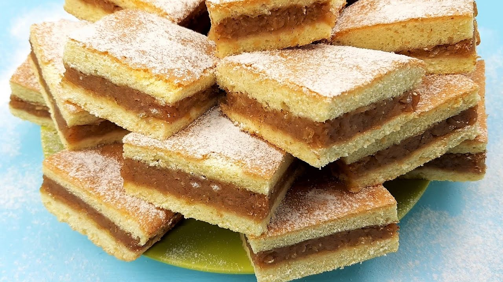

Ingrediente necesare
Pentru blaturi
- 500 g făină
- 200 g unt moale/untură
- 100 g smântână
- 1 ou
- 2 fiole zahăr vanilat
- 10 g praf de copt
- 1 vârf de cuțit de sare
Pentru umplutura
- 1, 5 kg mere
- 3 linguri zahăr
- 1 linguriță cu vârf scorțisoară pudră
Timpi de preparare
Cum să faci plăcintă cu mere
Pentru a face umplutura plăcintei cu mere, spală merele, dă-le pe răzătoarea mare (cu tot cu coajă, dacă nu te deranjează). Pune-le la calit într-un vas care nu lipește, cu 3-5 linguri de zahăr. Adaugă și scorțișoara după 5 minute. Amestecă ocazional și, când se mai evaporă zeama, dă de pe foc și lasă la răcit.
Într-un castron mare, freacă untul cu zahărul. Adaugă esența de vanilie și oul și bate ușor până obții un rezultat cremos. Pune și smântâna, amestecă până la omogenizare.
Separat, pentru a pregăti aluatul de plăcintă cu mere, combină făina cu sarea și praful de copt apoi adaugă peste amestecul cremos de mai sus, amestecând bine cu o lingură de lemn. Când aluatul care se formează se întărește și nu mai merge amestecat cu lingura, frământă cu mâna.
Când nu mai e lipicios aluatul pentru plăcinta cu mere, împarte-l în 2 bile egale. Presară făină pe masă și întinde cu făcălețul una din cele 2 bile (cât să-ți acopere tava în care vrei să faci plăcinta). Pune prima foaie în tavă și așează umpltura deasupra.
Întinde și a doua bilă de aluat (fix cum ai procedat cu prima) și apoi acoperă cu ea umplutura din tavă.
Dă tava la cuptorul preîncălzit timp de 30-35 de minute sau până când observi că s-a copt aluatul.
Scoate din cuptor și lasă puțin la răcit. Presară zahăr pudră pe deasupra plăcintei și porționeaz-o.